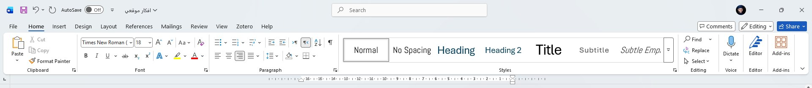

قبل ما نبدأ الكتابة، خلّينا نتعرّف سريعًا على الأجزاء الرئيسية لواجهة Word، حتى تعرف وين تلاقي أي أداة تحتاجها.

- شريط الأدوات السريع (أعلى اليسار): يحتوي أزرار تستخدمها كثيرًا، مثل الحفظ والتراجع والإعادة.
- التبويبات (Tabs): كلمات زي "الصفحة الرئيسية"، "إدراج"، "تخطيط"... كل تبويب يفتح مجموعة أدوات مختلفة.
- الشريط (Ribbon): المنطقة اللي تظهر فيها الأيقونات والأدوات الخاصة بالتبويب المفتوح حاليًا.
- منطقة الكتابة: الصفحة البيضاء الكبيرة في الوسط، هذا وين تكتب فيه نصك فعليًا.
هل تعلم؟
تبويب "الصفحة الرئيسية" (Home) هو التبويب الذي يفتح تلقائيًا كل مرة، لأنه يحتوي أكثر الأدوات استخدامًا مثل التنسيق والنسخ واللصق.